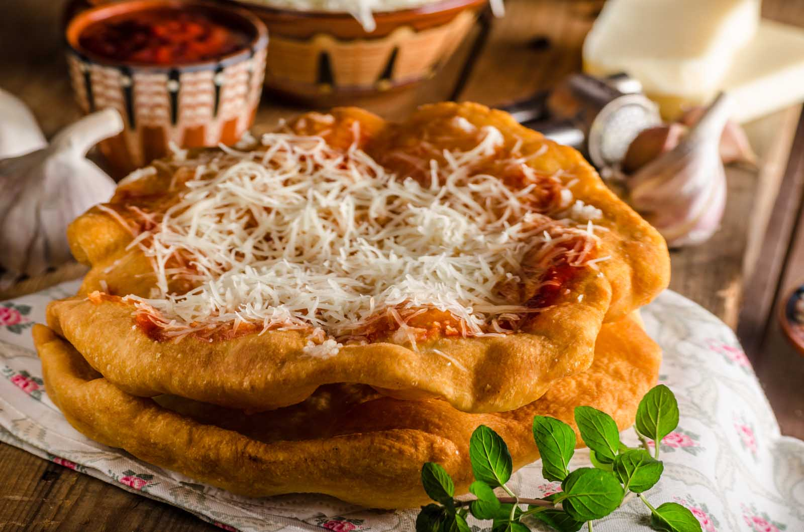
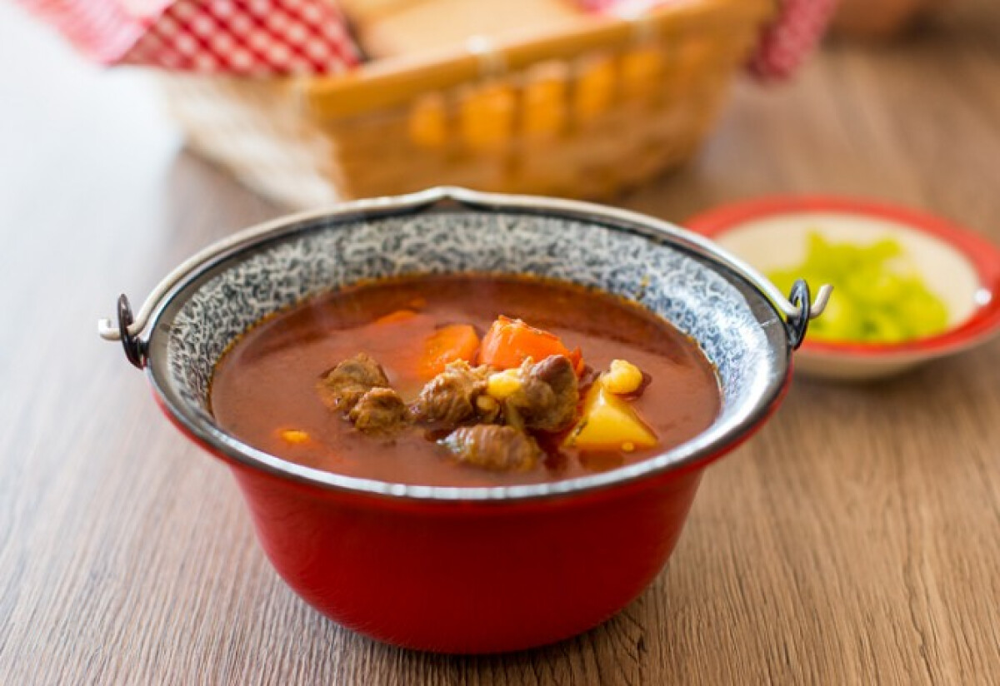
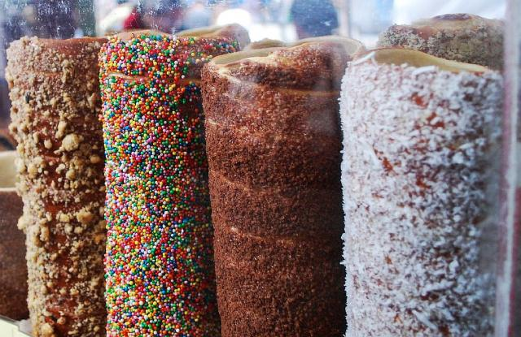
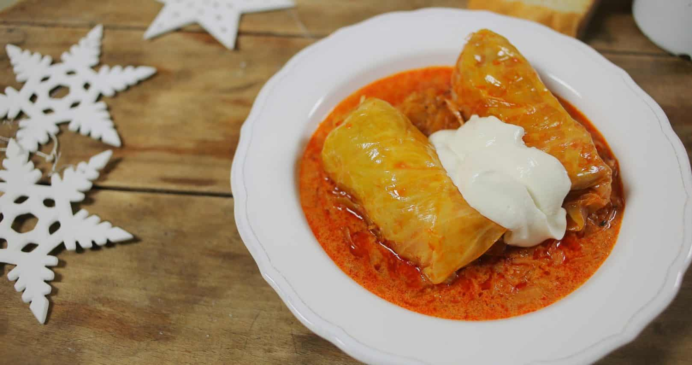
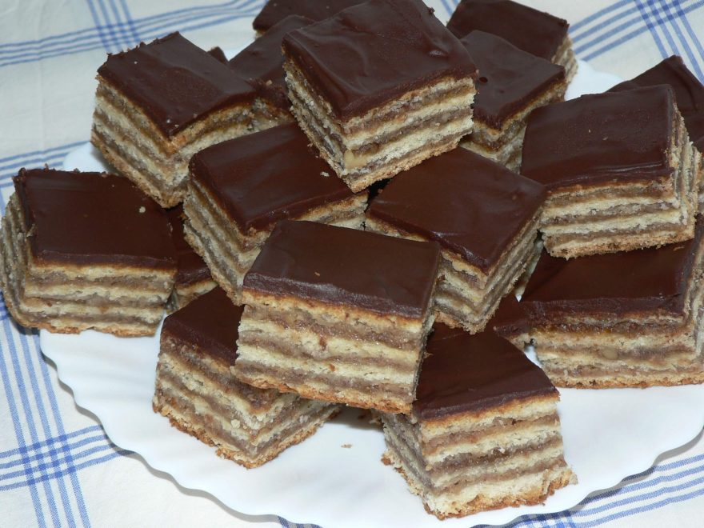

About This Page
Hungarian cuisine is known for its rich flavors, hearty dishes, and the generous use of spices, especially paprika. It combines influences from Central Europe, the Ottoman Empire, and neighboring countries. Traditional dishes often feature meats like pork, beef, and poultry, along with vegetables, potatoes, and sour cream. Signature dishes include goulash (a savory beef and vegetable soup), pörkölt (a meat stew), and töltött káposzta (stuffed cabbage). Sweet treats like dobos cake and chimney cake are also beloved. Hungarian cuisine is not only about bold flavors but also about bringing people together, making it a significant part of Hungary’s cultural identity. Now, I would like to show some of my favourites.
The Hungarian cuisine is very delicious and diverse, although not very healthy.
- Goulash.  Goulash soup, known as gulyásleves in Hungarian, is one of the most iconic dishes of Hungarian cuisine. It is a hearty and flavorful soup made with chunks of beef, potatoes, carrots, onions, and other vegetables, seasoned generously with sweet Hungarian paprika. Traditionally cooked in a cauldron over an open fire, gulyásleves is often enjoyed as a comforting meal. Its rich taste and aroma make it a favorite both in Hungary and internationally, representing the essence of Hungarian culinary traditions.
- Chimney cake.  Chimney cake, or kürtöskalács in Hungarian, is a traditional Hungarian pastry. It is made from sweet, yeast-based dough that is rolled into a spiral shape and baked on a cylindrical spit. The cake is coated with sugar, which caramelizes as it bakes, creating a crispy, golden-brown crust. Often served warm, it is typically dusted with additional toppings such as cinnamon, chocolate, or crushed nuts. Popular at festivals and street markets, chimney cake is a beloved treat in Hungary and other Central European countries.
- Stuffed cabbage.  Stuffed cabbage, or töltött káposzta in Hungarian, is a classic dish made by wrapping a mixture of ground meat (usually pork or beef), rice, and spices in cabbage leaves. The rolls are then simmered in a savory tomato-based sauce, often with a touch of sour cream for added richness. This hearty and flavorful dish is a staple in Hungarian cuisine, commonly enjoyed during holidays and family gatherings. It's typically served with a dollop of sour cream on top.
Learn More
Visit this link for more information of Hungarian cuisine...
